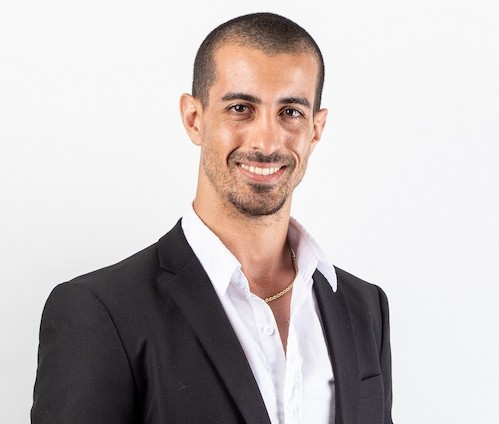

HOJA DE VIDA

Carlos Andres Torres Mesa
DATOS
EDAD: 29 AÑOS
Numero de documento: 1.112.345.678
Fecha de nacimiento: 20 de mayo de 2004
Direccion: Carrera 10 # 20-30
Telefono: 321 654 9870
Correo electronico:AnderT@gmail.com
ESTUDIOS
* Bachillerato en el Colegio San Juan Bosco (2016-2022)
* Ingeniero de aviones en la Universidad Nacional de Colombia (2023-presente)
* Tecnico en mantenimiento de sistemas de computo en el SENA (2021-2022)
* Curso de ingles avanzado en el British Council (2020-2021)
* Diseño grafico basico en Platzi (2022)
* Ofimatica avanzada en el SENA (2021)
* Especializacion en mantenimiento de motociletas en el SENA (2020)
EXPERIENCIA LABORAL
* Practicas de mantenimiento de computo en el SENA (2022) (6 meses)
* Auxiliar de mantenimiento en Talleres motociletas y Mas (2021) (2 años)
* Servicio al cliente en Amazon Operation services (2020) (6 meses)
OBJETIVOS PERSONALES
* Desarrollarme profesionalmente en el campo de la ingenieria de aviones, adquiriendo experiencia y conocimientos practicos que me permitan contribuir al avance tecnologico del sector aeroespacial.
* Obtener certificaciones adicionales en areas relacionadas con la ingenieria aeroespacial para ampliar mis competencias y mejorar mis perspectivas laborales.
* Participar en proyectos de investigacion y desarrollo dentro de la industria aeroespacial, colaborando con equipos multidisciplinarios para innovar y mejorar los procesos existentes.
* Establecer una red profesional solida dentro del sector aeroespacial, asistiendo a conferencias, seminarios y eventos de la industria para conectar con otros profesionales y expertos en el campo.
* Mantenerme actualizado con las ultimas tendencias y avances tecnologicos en la ingenieria de aviones, a traves de cursos, talleres y lectura especializada.
* Buscar oportunidades de liderazgo en proyectos y equipos de trabajo, de diseño de motociletas, para desarrollar habilidades de gestion y direccion que complementen mi formacion tecnica.
* Compartir mi conocimientos y experiencias con otros estudiantes y profesionales, a traves de mentorias, talleres o publicaciones, para contribuir al crecimiento de la comunidad de ingenieria aeroespacial.
OBJETIVOS LABORALES
* Obtener un puesto de ingeniero de aviones en una empresa reconocida del sector aeroespacial, donde pueda aplicar mis conocimientos y habilidades para contribuir al desarrollo de proyectos innovadores.
* Participar en el diseño, desarrollo y prueba de nuevos modelos de aviones, trabajando en equipo con otros ingenieros y profesionales para asegurar la calidad y seguridad de las aeronaves.
* Contribuir a la optimizacion de procesos de fabricacion y mantenimiento de aviones, implementando soluciones tecnicas que mejoren la eficiencia y reduzcan costos.
* Desarrollar habilidades especializadas en areas clave de la ingenieria aeroespacial, como aerodinamica, sistemas de propulsión o materiales avanzados, para convertirme en un experto en mi campo.
* Colaborar en proyectos internacionales que me permitan ampliar mi experiencia y conocimientos, trabajando con equipos multiculturales y enfrentando desafios globales.
* Mantenerme actualizado con las ultimas tecnologias y tendencias en la industria aeroespacial, participando en cursos de formacion continua y asistiendo a conferencias del sector.
* Contribuir al desarrollo sostenible dentro de la industria aeroespacial, promoviendo el uso de tecnologias limpias y practicas responsables en el diseño y operacion de aviones.
METAS A CORTO PLAZO
* Completar mi formacion academica en ingenieria de aviones, asegurandome de adquirir los conocimientos y habilidades necesarias para desempeñarme eficazmente en el campo.
* Obtener certificaciones adicionales en areas relacionadas con la ingenieria aeroespacial, como software de diseño asistido por computadora (CAD) o gestion de proyectos.
* Participar en proyectos de investigacion o desarrollo dentro de la universidad, para ganar experiencia practica y aplicar los conceptos aprendidos en clase.
* Realizar pasantias o practicas profesionales en empresas del sector aeroespacial, para familiarizarme con el entorno laboral y establecer contactos profesionales.
* Desarrollar un portafolio de proyectos personales relacionados con la ingenieria de aviones, que demuestre mis habilidades tecnicas y creatividad.
* Asistir a conferencias, seminarios y talleres relacionados con la ingenieria aeroespacial, para mantenerme actualizado con las ultimas tendencias y avances tecnologicos.
* Mejorar mis habilidades blandas, como la comunicacion, el trabajo en equipo y la gestion del tiempo, para complementar mi formacion tecnica y prepararme para el entorno laboral.
METAS A MEDIANO PLAZO
* Obtener un puesto de ingeniero de aviones en una empresa reconocida del sector aeroespacial, donde pueda aplicar mis conocimientos y habilidades para contribuir al desarrollo de proyectos innovadores.
* Participar en el diseño, desarrollo y prueba de nuevos modelos de aviones, trabajando
* Formar parte de equipos de motociletas multidisciplinarios para adquirir experiencia en diferentes areas de la ingenieria aeroespacial.
METAS A LARGO PLAZO
* Convertirme en un ingeniero de aviones senior, liderando proyectos complejos y tomando decisiones estrategicas que impacten positivamente en la empresa y la industria aeroespacial.
* Tener una empresa reconocida en el sector de mantenimiento de motociletas, destacandome por la calidad de mis servicios y mi capacidad para innovar en el campo.
HABILIDADES
* Habilidades en analisis estructural y dinamica de vuelo.
* Capacidad para trabajar en equipo y colaborar en proyectos multidisciplinarios.
* Excelentes habilidades de comunicacion y presentacion tecnica.
* Conocimiento de normativas y regulaciones del sector aeroespacial.
* Habilidades en gestion de proyectos y liderazgo de equipos.
* Adaptabilidad y capacidad para aprender nuevas tecnologias rapidamente.
REFERENCIAS
* Juan Perez - Profesor de Ingenieria Aeroespacial, Universidad Nacional de Colombia. Correo:Juan2542@outlook.com
* Maria Gomez - Supervisor de Practicas, SENA. Correo:MGomez1@gmail.com
* Luis Rodriguez - Gerente de Talleres Motociletas y Mas. Correo:Rodriguezluis@hotmail.com
* Ana Martinez - Coordinadora de Recursos Humanos, Amazon Operation Services. Correo:Ana.58@amazon.com